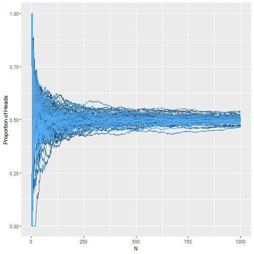
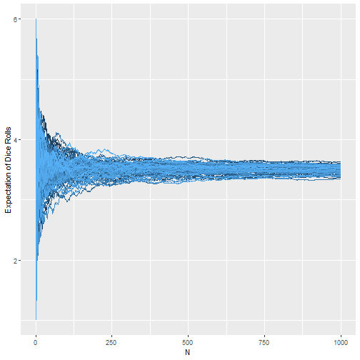
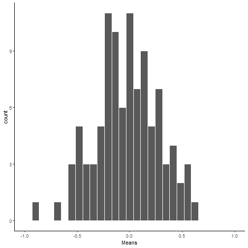
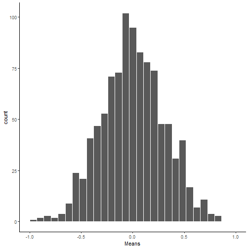
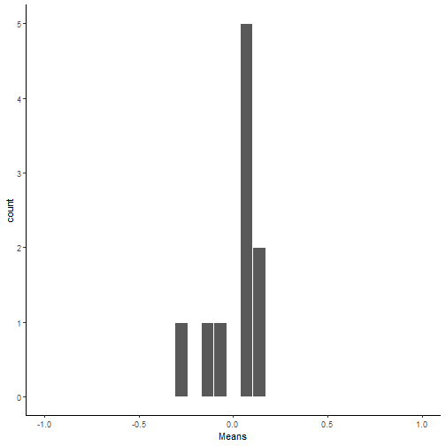
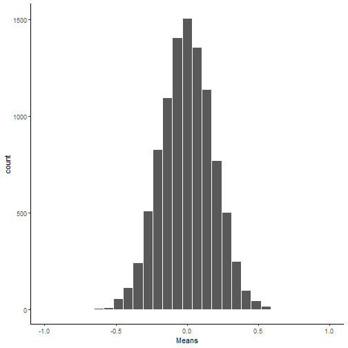
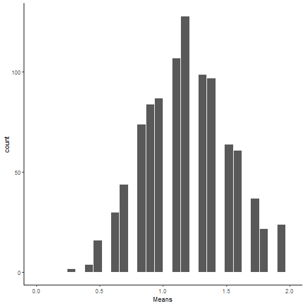
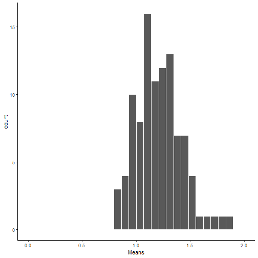
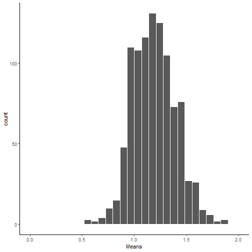
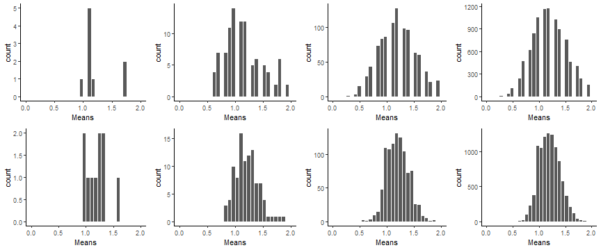

Sampling Distributions and Central Limit Theorem
Adam J Sullivan
Assistant Professor of Biostatistics
Brown University
Law of Large Numbers and Central Limit Theorem
Important Statistical Concepts
- Two things we use more than most any other concepts is the Law of Large Numbers (LLN) and the Central Limit Theorem (CLT).
- There are similar to what we discussed in probability with the idea of looking at things in the long run.
- In other words considering large sample sizes.
- We will begin with the Law of Large Numbers.
Law of Large Numbers (LLN)
- As sample size increases, the sample mean becomes closer to the true population mean.
\[\lim_{n\to\infty}\bar{X}_n= \mu\]
Displaying the Law of Large Numbers
- Let's consider flipping a coin.
- We expect to get heads 50% of the time.
Law of Large Numbers: 10 Coin Tosses

Law of Large Numbers: 100 Coin Tosses

Law of Large Numbers: 1000 Coin Tosses

Law of Large Numbers: 10000 Coin Tosses

Additional Expectations
- Consider rolling a die.
- Remember that expectation is the center or what we get on average:
\[\dfrac{1+2+3+4+5+6}{6}= 3.5\]
LLN Expectation of Dice

LLN Convergence to mean
- I have shown you some examples where we can see that the LLN converges to the true average.
- How do we know what sample we might need?
- Answer: Variation matters
Consider the Following
- Let's say that we have two groups of people
- Group A: Heights which are \(N(63.8,3.86)\)
- Group B: Heights which are \(N(63.8, 12.01)\)
- We will sample from these groups and then plot their relationships
What do you see?
- Consider the plots
- What do you notice about the differences?
- What does variation tell us about the LLN?
Example

What did you see?
- Within about 50 rolls the smaller variance group was very close to the true mean.
- After 100 rolls the large variance has still not converged on the mean. - The larger the variance, the larger the samples size in order to have the estimate be the true mean.
Why do we care about the LLN?
- If we can get a good sample size, then we can have a true estimate of the population.
- Casinos care because even with a few good gamblers, in the long run they come ahead and do not lose money.
The Central Limit Theorem
- If you sample repeatedly from the same population with replacement, then the means of each of the samples will be approximately normal in distribution.
- Break down:
- Take a sample from any population.
- Take the mean.
- Repeat this over and over again.
- Those means follow a normal distribution.
Assumptions Behind Central Limit Thorem
- Data must be randomly sampled.
- Sample are independent of each other.
- Sample size needs to be sufficiently large (LLN).
- Sample should not be bigger than 10% of the population. (Due to sampling with replacement)
Central Limit Theorem with Normal Data
- Let's consider the data from a \(N(63.8, 3.86)\).
- This is already normal but let's sample from this with 10 samples each time and see what the distribution of means looks like.
10 Samples of 10 Each

100 Samples of 10 Each

1000 Samples of 10 Each

10000 Samples of 10 Each

Progression

Central Limit Theorem with Normal Data
- Let's consider the data from a \(N(63.8, 3.86)\).
- This is already normal but let's sample from this with 100 samples each time and see what the distribution of means looks like.
10 Samples of 100 Each

100 Samples of 100 Each

1000 Samples of 100 Each

10000 Samples of 10 Each

Progression

Progression of Both

Conclusions
- Even with small samples, normally distributed data's means converge to normal relatively quickly.
- When the sample size of each sample is increased, we see that there is a decrease in the variance of the sample mean distribution.
Non-normal Data
- Consider the Poisson Distribution.
- Poisson distribution takes on data where we wish to count.
- It can also be used with rare events data. With Poisson we have a rate and time associated.
- So let's consider a Poisson distribution with the rate of events beinng 1.2 per day.
Distribution

10 Samples of 10 Each

100 Samples of 10 Each

1000 Samples of 10 Each

10000 Samples of 10 Each

Progression

Central Limit Theorem with Poisson Data
- We will be looking at the same population with rate of 1.2 per day.
- This time we will do samples of 30 each.
10 Samples of 30 Each

100 Samples of 30 Each

1000 Samples of 30 Each

10000 Samples of 30 Each

Progression

Progression of Both

Conclusions
- Even with skewed data we can see the sample means have a normal distribution.
- Once again with the increase in sample size, the distribution of means has a tighter variance.
LLN and CLT review
- The LLN shows us that with a large sample size, the mean of our sample will be the same as the population mean.
- The CLT states that if we perform sampling over and over again, then the distribution of the means of each sample approaches the normal distribution.
How Do they work together?
- When we increase sample size the LLN tells us we are closer to our true mean.
- This means each estimate with a larger sample size is closer to one true value.
- The CLT takes many many samples and when each of those samples is closer to the true mean, then there is less variance.
- We have seen both of these work together.
Variance of Sampling Distributions
- Consider the previous example with the Poisson Distribution with rate 1.2.
- We generated the sample to display the distribution
data <- rpois(100000000, 1.2)
Mean and Variance of Poisson
- Mean: 1.1998299
- Var: 1.1998921
Sampling distributions
t=1000000
n=10
scores <- rpois(t*n, 1.2)
samples <- rep(1:t,each=n)
my_df <- data.frame(samples,scores)
# get the means of the samples
my_df %>%
group_by(samples) %>%
summarise(means=mean(scores)) %>%
summarise(var(means))
Sampling distributions
## # A tibble: 1 x 1
## `var(means)`
## <dbl>
## 1 0.120
Sampling distributions
t=1000000
n=100
scores <- rpois(t*n, 1.2)
samples <- rep(1:t,each=n)
my_df <- data.frame(samples,scores)
# get the means of the samples
my_df %>%
group_by(samples) %>%
summarise(means=mean(scores)) %>%
summarise(var(means))
Sampling distributions
## # A tibble: 1 x 1
## `var(means)`
## <dbl>
## 1 0.0120
What do we see?
- Original Distribution 1.2
- Variance of Means of Samples size 10: 0.12
- Variance of Means of Samples size 100: 0.012
Conclusions
- With a sample of size 10, the variance of the sample means are 1/10th the original.
- What a sample of size 100, the variance of the sample means are 1/100th the original.
Other samples
What if the sample is size 26:
## # A tibble: 1 x 1
## `var(means)`
## <dbl>
## 1 0.0460
Comparing Variance
- Variance of means with sample size 26:
round(var3, 3) - Variance of original divided by 26: 0.0461538
Variance of Sample Means
- In short, if the variance of a distribution is \(\sigma^2\), then the variance of the sample means is \(\dfrac{\sigma^2}{n}\).
- Given that each sample is of size \(n\).
- This means that the larger the sample, the smaller the variance.
Sampling Distribution of the mean
- Consider taking samples of size \(n\) from a population.
- Then the mean, \(\bar{X}\), will follow a normal distribution.
- Specifically: \[ \bar{X} \sim N\left(\mu, \dfrac{\sigma^2}{n}\right)\]
- Where, \(\mu\) is the mean of the population.
Why is this special?
- Many times data follows a distribution where we do not know the exact distribution of the data.
- We can then use the mean and the central limit theorem to assume that the mean follows a normal distribution.
- This means we now understand what the mean is, how it varies and all information on probabilities associated with it.